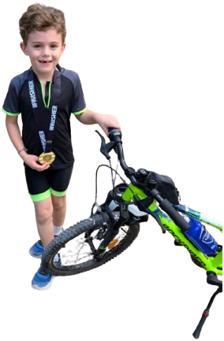

Souvenirs
Anciens triathlons
Tous les triathlons de Marin, du plus récent au plus ancien.
2e
Dimanche 18 octobre 2026
Piscine Alfred Sevestre, puis parc Suzanne Lenglen.

1er
Le tout premier
Aux mêmes endroits : la piscine et le parc. Et une première médaille !
